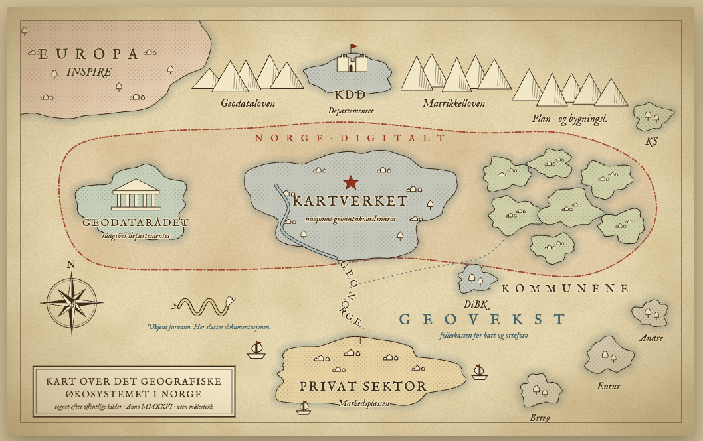

Norges geografiske økosystem
Kart og geografiske data kommer ikke av seg selv. I Norge produseres, forvaltes og deles de gjennom et samarbeid mellom stat, kommuner og private aktører, styrt av lover og fellesløsninger. Å kjenne aktørene og hvordan de henger sammen gjør det lettere å finne data, forstå hvor de kommer fra og vite hvem som har ansvaret.
Under er ulike oversikter og referanser til detaljert informasjon om aktørene i det norske geografiske økosystemet.

To illustrative oversikter å utforske:
- Kart over det geografiske økosystemet i Norge: den «gamle kartet»-versjonen. Klikk på et sted for å se relasjonene til de andre aktørene.
- Det geografiske økosystemet i Norge, oversikt: samme økosystem som kort og soner, fra politikk og regelverk øverst via Kartverket i midten til kommuner, privat sektor og randsoneaktører.
Samarbeid og felles løsninger
Kartverket samler arbeidet på sin side om geodataarbeid. Disse temaene er et godt utgangspunkt:
- Nasjonalt geodataråd: bidrar til samarbeid om og bruk av geografisk informasjon, og følger opp nasjonale strategier for den felles digitale geografiske infrastrukturen.
- Norge digitalt: et nasjonalt samarbeid om å skaffe, dele og bruke stedfestet informasjon.
- Geovekst: samarbeid om å etablere, forvalte og bruke geografisk informasjon. I tillegg til offentlige etater deltar Bane NOR, Fornybar Norge og Telenor.
- Fellesløsningene: digitale systemer for kart- og eiendomsinformasjon som Kartverket forvalter. Noen inngår i Norge digitalt, andre tilhører andre samarbeid og myndighetsarbeid.
- DOK og temadata: kartgrunnlag for kunnskapsbasert og effektiv planlegging og saksbehandling.
- Planarbeid: veiledning for kommuner og andre som lager og forvalter arealplaner.
Utgangspunkt for denne siden: Kartverket: Geodataarbeid.

Aktivitet
Forslag til øvelser du kan prøve på egenhånd:
- Utforsk det interaktive kartet og velg to aktører. Beskriv hvordan de henger sammen: regulering, penger eller data?
- Velg et datasett du kjenner til, og finn ut hvem som produserer det, hvem som forvalter det og hvor det deles.
- Les geodataplanen for Agder og finn ut hvilke aktører som samarbeider om geodata i regionen vår.